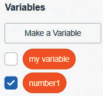
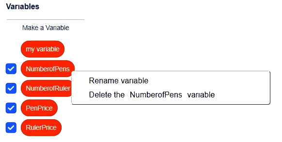

(c)
Variables

NOTE: You can click again the Make a Variable box to create other new variables as needed for your task.
(b)
Renaming or deleting variables
Steps
- 1. Right click the variable you wish to rename or delete.
- 2. Select Rename variable and enter the new name to rename the variable.
- 3. Select Delete the name of variable to delete the variable. Observe Figure 3.

Once a variable has been created, it can be used in different places in a program. Consider the previous example of a computer program used in supermarkets; Variables can be used in the calculation of the amount due for each item, the total price for all the items, and the change you are to receive. For example, when calculating the amount due for 3 pens, the calculation could be expressed as PenPrice * NumberOfPens,